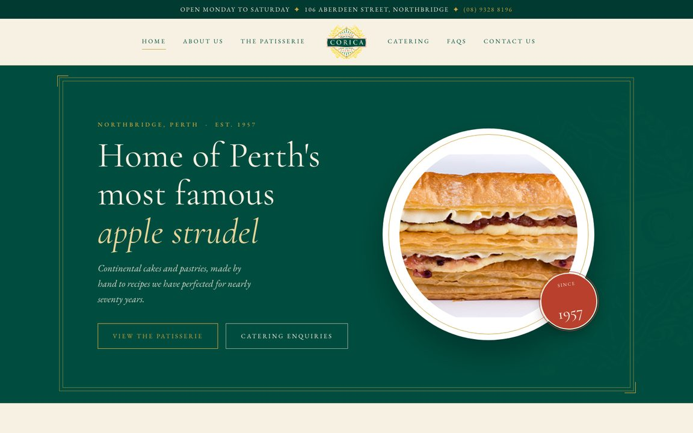

1Concept oneHeritage
The classic choice. A centred, symmetrical layout in the logo's deep green and cream with fine gold rules, round photo plates and an "Est. 1957" seal. It reads like a fine old pasticceria that has been quietly kept in perfect order.